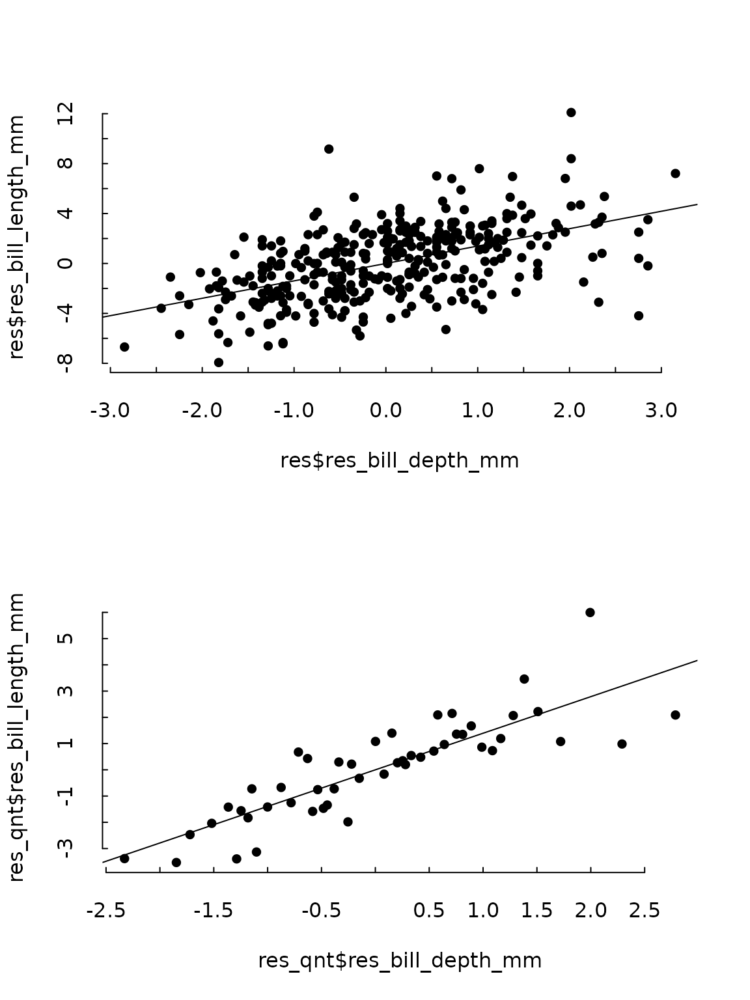

partialling_out.RmdPartialling out is a package that allows to generate residualised
variables of already existing linear or fixed effects models. So far it
works with lm, felm (lfepackage)
and feols (fixest package) following the
Frisch-Waugh-Lovell theorem, as explained in Lovell (2008). It follows a logic similar
to the fwlplot package with three main differences. - It
uses an already existing model instead of a formula. - Works with
lm and felm objects alongside
feols. - Returns a data.frame, thus offering more freedom
of what to do with the results.
You can install the development version of partialling.out from GitHub with:
# install.packages("pak")
pak::pak("marcboschmatas/partialling.out")Let’s make a simple linear model first.
library(partialling.out)
library(tinytable)
library(tinyplot)
library(palmerpenguins)
model <- lm(bill_length_mm ~ bill_depth_mm + species, data = penguins)
summary(model)
#>
#> Call:
#> lm(formula = bill_length_mm ~ bill_depth_mm + species, data = penguins)
#>
#> Residuals:
#> Min 1Q Median 3Q Max
#> -8.0300 -1.5828 0.0733 1.6925 10.0313
#>
#> Coefficients:
#> Estimate Std. Error t value Pr(>|t|)
#> (Intercept) 13.2164 2.2475 5.88 9.83e-09 ***
#> bill_depth_mm 1.3940 0.1220 11.43 < 2e-16 ***
#> speciesChinstrap 9.9390 0.3678 27.02 < 2e-16 ***
#> speciesGentoo 13.4033 0.5118 26.19 < 2e-16 ***
#> ---
#> Signif. codes: 0 '***' 0.001 '**' 0.01 '*' 0.05 '.' 0.1 ' ' 1
#>
#> Residual standard error: 2.518 on 338 degrees of freedom
#> (2 observations deleted due to missingness)
#> Multiple R-squared: 0.7892, Adjusted R-squared: 0.7874
#> F-statistic: 421.9 on 3 and 338 DF, p-value: < 2.2e-16Using the partialling_out function, you can get the
residualised variable of interest (bill length) and of the first
explanatory variable (bill_length), i.e. it would return the residuals
of the following two regressions.
modely <- lm(bill_length_mm ~ species, data = penguins)
modelx <- lm(bill_depth_mm ~ species, data = penguins)
res <- partialling_out(model, data = penguins)
tt(head(res))| res_bill_length_mm | res_bill_depth_mm |
|---|---|
| 0.3086093 | 0.3536424 |
| 0.7086093 | -0.9463576 |
| 1.5086093 | -0.3463576 |
| -2.0913907 | 0.9536424 |
| 0.5086093 | 2.2536424 |
| 0.1086093 | -0.5463576 |
Accordingly, the coefficient of res_bill_depth_mm in the
model lm(res_bill_length_mm ~ res_bill_depth_mm) will be
the same of the coefficient of bill_depth_mm in the
original model.
resmodel <- lm(res_bill_length_mm ~ res_bill_depth_mm, data = res)
print(c(model$coefficients[2], resmodel$coefficients[2]))
#> bill_depth_mm res_bill_depth_mm
#> 1.394011 1.394011If both is set to FALSE, the function will
return the actual Y values and the residualised X values.
tt(head(partialling_out(model, penguins, both = FALSE)))| bill_length_mm | res_bill_depth_mm |
|---|---|
| 39.1 | 0.3536424 |
| 39.5 | -0.9463576 |
| 40.3 | -0.3463576 |
| 36.7 | 0.9536424 |
| 39.3 | 2.2536424 |
| 38.9 | -0.5463576 |
Results can then be displayed in a scatterplot either regular or binned.
tinytheme("tufte")
par(mfrow = c(2, 1))
tinyplot(res$res_bill_depth_mm,
res$res_bill_length_mm); abline(resmodel)
res$qnt <- cut(res$res_bill_depth_mm,
breaks = quantile(res$res_bill_depth_mm,
probs = seq(0, 1, .02)),
include.lowest = TRUE)
res_qnt <- aggregate(cbind(res_bill_depth_mm, res_bill_length_mm) ~ qnt,
data = res, FUN = mean)
tinyplot(res_qnt$res_bill_depth_mm,
res_qnt$res_bill_length_mm); abline(resmodel)
As stated, the model will also work with feols or
felm models
library(fixest)
model_fixest <- feols(bill_length_mm ~ bill_depth_mm | species,
data = penguins)
tt(head(partialling_out(model_fixest, data = penguins)))| res_bill_length_mm | res_bill_depth_mm |
|---|---|
| 0.3086093 | 0.3536424 |
| 0.7086093 | -0.9463576 |
| 1.5086093 | -0.3463576 |
| -2.0913907 | 0.9536424 |
| 0.5086093 | 2.2536424 |
| 0.1086093 | -0.5463576 |
library(lfe)
model_lfe <- felm(bill_length_mm ~ bill_depth_mm | species,
data = penguins)
tt(head(partialling_out(model_lfe, data = penguins)))| res_bill_length_mm | res_bill_depth_mm |
|---|---|
| 0.3086093 | 0.3536424 |
| 0.7086093 | -0.9463576 |
| 1.5086093 | -0.3463576 |
| -2.0913907 | 0.9536424 |
| 0.5086093 | 2.2536424 |
| 0.1086093 | -0.5463576 |
Any parameters that could be passed to lm(),
feols(), or felm(), can be passed to
partialling_out().
model_fixest <- feols(bill_length_mm ~ bill_depth_mm | species,
data = penguins, cluster = ~species)
tt(head(partialling_out(model_fixest, data = penguins, cluster = ~species)))| res_bill_length_mm | res_bill_depth_mm |
|---|---|
| 0.3086093 | 0.3536424 |
| 0.7086093 | -0.9463576 |
| 1.5086093 | -0.3463576 |
| -2.0913907 | 0.9536424 |
| 0.5086093 | 2.2536424 |
| 0.1086093 | -0.5463576 |
To the authors of the fwlplot package, Kyle Butts and Grant McDermott, which has provided inspiration and ideas for this project. To my colleague Andreu Arenas-Jal for his insight and guiding.